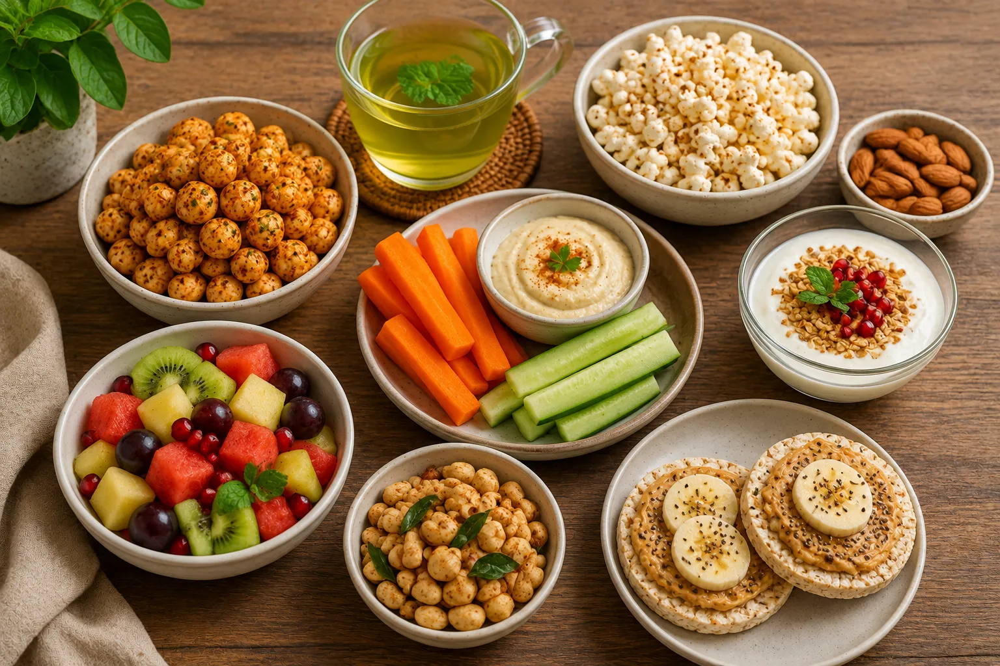
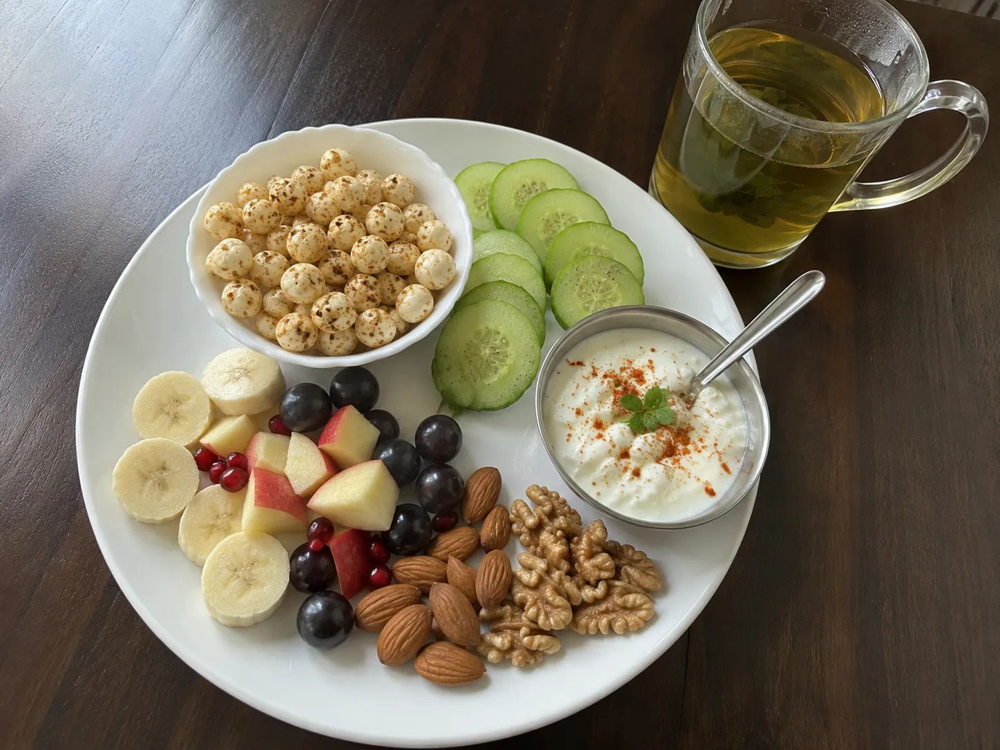

Introduction
It's 5:30 PM. You've just finished work or college, and suddenly your stomach starts rumbling. Sound familiar?
For many of us, the evening is when cravings hit the hardest. A packet of chips, biscuits, or sugary snacks may seem tempting, but these choices can quickly add extra calories without keeping you full for long.
The good news? Healthy evening snacking doesn't have to be boring.
By choosing nutrient-rich snacks , you can satisfy your hunger, enjoy delicious flavors, and stay on track with your health goals. Whether you're trying to manage your weight, eat more mindfully, or simply make smarter food choices, these snack ideas are easy to prepare and perfect for busy lifestyles.
Let's explore some healthy evening snacks that are both satisfying and light.
Why Evening Snacking Matters
Many people think snacking is unhealthy, but that's not always true.
A well-planned snack can:
Prevent overeating at dinner
Keep energy levels stable
Reduce unhealthy cravings
Help you stay focused during work or study
Add important nutrients to your daily diet
The key isn't avoiding snacks—it's choosing better ones.

1. Roasted Makhana
Roasted makhana is light, crunchy, and one of the easiest healthy snacks to prepare.
Season it with:
Black pepper
Peri Peri
Garlic herbs
Turmeric
Chaat masala
It pairs perfectly with evening tea or coffee.
2. Apple Slices
An apple is naturally sweet, refreshing, and easy to carry anywhere.
For extra flavor, sprinkle:
Cinnamon
Black pepper
Lemon juice
3. Air-Popped Popcorn
Plain air-popped popcorn is surprisingly filling because of its volume and fiber.
Avoid excessive butter or caramel coatings if you're trying to keep calories low.
4. Greek Yogurt
Plain Greek yogurt provides protein and pairs well with:
Fresh berries
Chopped fruits
Cinnamon
Choose unsweetened varieties whenever possible.
5. Cucumber & Carrot Sticks
Fresh vegetables are naturally low in calories while adding crunch and hydration.
Pair them with a small amount of hummus or yogurt dip for extra flavor.
6. Fresh Fruit Bowl
Mix seasonal fruits like:
Papaya
Watermelon
Orange
Kiwi
Strawberries
A colorful fruit bowl is naturally refreshing and satisfying.
7. Boiled Edamame
Edamame provides plant protein and fiber, making it a filling snack option.
Season lightly with sea salt or black pepper.
8. Homemade Mushroom Soup
A warm bowl of mushroom soup is comforting, especially during cooler evenings.
Use:
Fresh mushrooms
Garlic
Onion
Black pepper
Vegetable stock
Avoid heavy cream if you're aiming for a lighter option.
9. Roasted Chickpeas
Roasted chickpeas provide crunch along with protein and fiber.
Flavor ideas:
Paprika
Garlic powder
Cumin
Black pepper
10. Green Tea with Roasted Nuts
A cup of green tea paired with a small portion of unsalted almonds or pistachios makes a balanced evening snack.
Remember that nuts are nutritious but calorie-dense, so portion size matters.

Tips for Smarter Evening Snacking
Here are a few simple habits that can make your snacks more satisfying:
Eat slowly and mindfully.
Choose whole foods whenever possible.
Drink a glass of water before reaching for a snack.
Keep healthy snacks visible and easy to grab.
Avoid eating directly from large packets.
Snacks to Enjoy Less Often
These foods are perfectly okay once in a while, but they are usually higher in calories, sodium, or added sugar:
Potato chips
Sugary biscuits
Deep-fried snacks
Candy
Sugar-sweetened beverages
Enjoy them occasionally while focusing on a balanced overall diet.
Frequently Asked Questions
Can I eat snacks while trying to lose weight?
Yes. Healthy snacks can fit into a balanced eating plan. The key is choosing nutritious foods and being mindful of portion sizes.
Is roasted makhana a good evening snack?
Yes. Plain roasted makhana is crunchy, versatile, and can be a nutritious snack option when prepared with minimal oil and moderate seasoning.
Should I skip evening snacks?
Not necessarily. If you're genuinely hungry, a balanced snack may help prevent overeating later at dinner.
Are fruits better than packaged snacks?
Fresh fruits provide vitamins, minerals, and dietary fiber, making them a nutritious choice compared with many highly processed snack foods.
Final Thoughts
Evening hunger is completely normal, but your snack choices can make a big difference. Instead of automatically reaching for chips or sugary treats, keeping a few nutritious options on hand can help you satisfy cravings while supporting your overall health goals.
Roasted makhana, fresh fruits, yogurt, mushroom soup, vegetables, and air-popped popcorn are just a few examples of snacks that are easy to prepare, enjoyable to eat, and suitable for many healthy eating patterns. The goal isn't to eliminate your favorite treats—it's to build everyday habits that are both satisfying and sustainable.